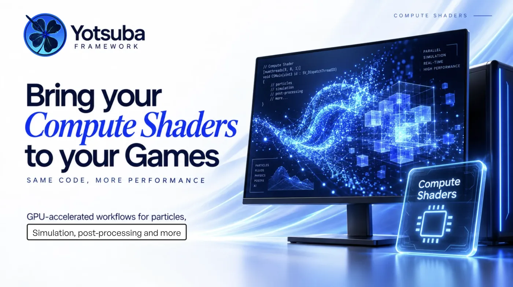
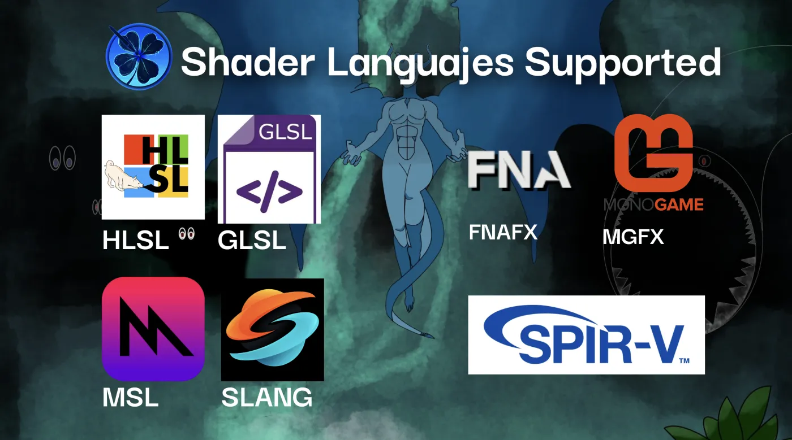
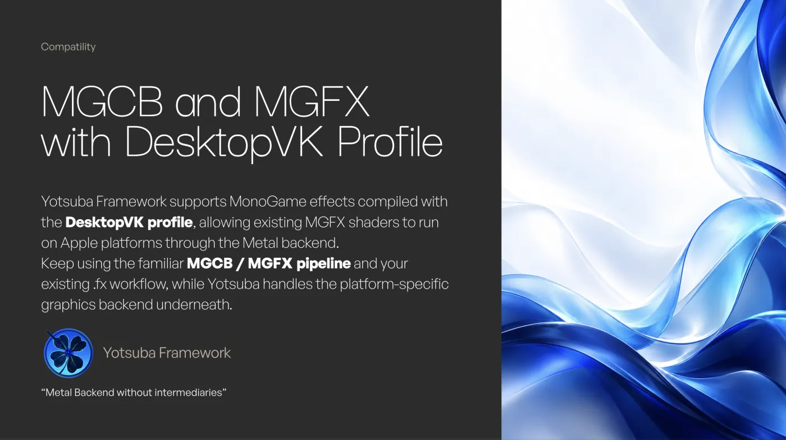
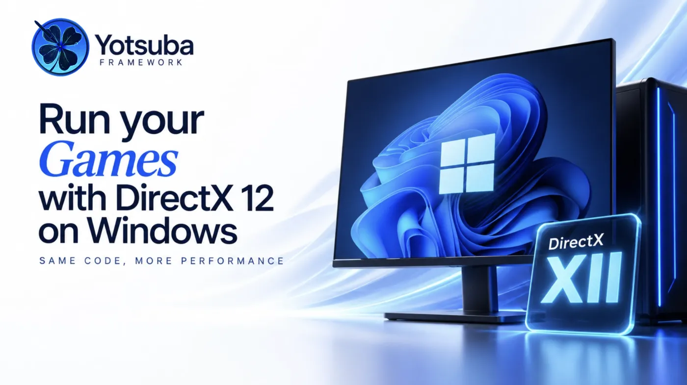
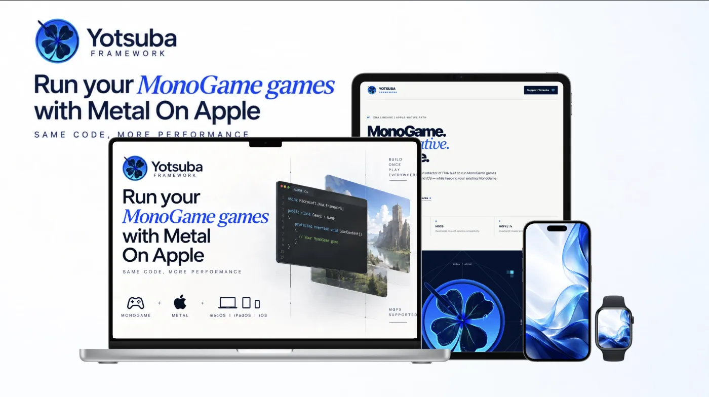
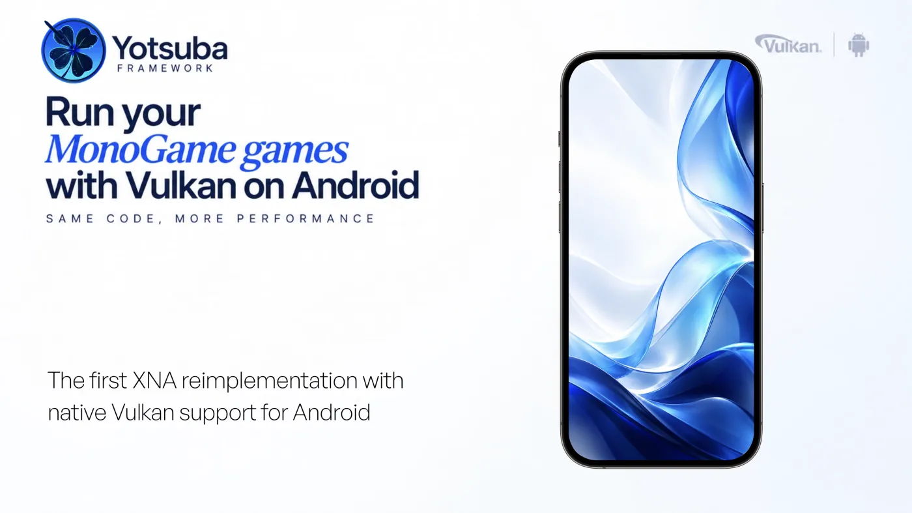
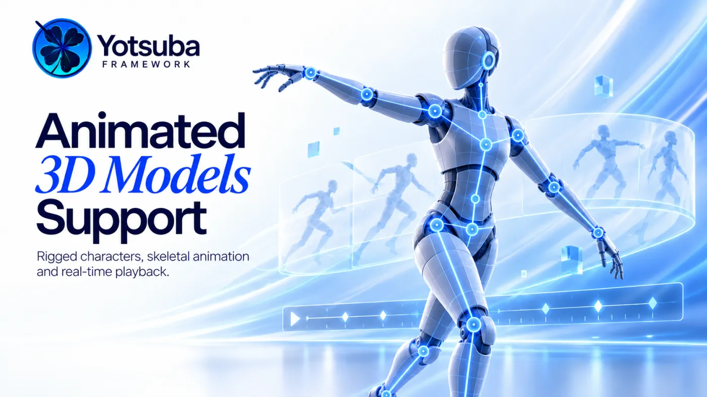
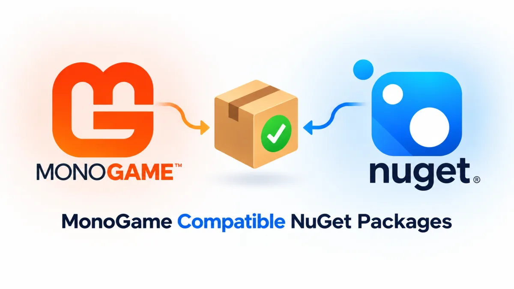

Compute Shaders
Run massively parallel workloads directly on the GPU for advanced effects, particle simulations, procedural generation, image processing, lighting and physics calculations.


XNA lineage / modern GPU architecture
Yotsuba FrameworkThe only XNA-based framework to completely modernize its graphics architecture: Compute Shaders, Vulkan on Android, WebGPU for the web and seven shader languages. It also enables shader compilation at runtime.
A real-time scene running in the browser through WebGPU. The same modern graphics API that powers the announced web target for Yotsuba Framework.
Recorded from a real WebGPU run. WebGPU support in Yotsuba Framework is still part of the announced roadmap.
The current capability set focuses on modern GPU workloads, shader compatibility and native graphics paths while preserving the familiar XNA and MonoGame development model.
Run massively parallel workloads directly on the GPU for advanced effects, particle simulations, procedural generation, image processing, lighting and physics calculations.

Choose the shader language that fits each platform, including MGFX, FNAFX, Slang, HLSL, GLSL, MSL and direct SPIR-V input. MGFX, Slang, GLSL and HLSL are also WebGPU-compatible.

Keep using the familiar MGCB and MGFX pipeline. Existing MonoGame effects compiled with the DesktopVK profile can run on Apple platforms through the Metal backend, and MGFX will be compatible with WebGPU too.

Use a native DirectX 12 rendering path on Windows for modern desktop GPUs while keeping the familiar XNA and MonoGame framework model.

Run MonoGame games through a native Metal path across macOS, iPadOS and iOS, keeping the same code and a familiar framework workflow.

Bring the same XNA-shaped framework workflow to Android through a native Vulkan rendering path built for modern mobile GPUs.

Take the same XNA-shaped workflow to the browser through WebGPU, the modern graphics and compute API of the web. Depending on the platform, the browser maps WebGPU onto Vulkan, DirectX 12 or Metal. MGFX, Slang, GLSL and HLSL shaders are WebGPU-compatible.
WebGPU support is on the roadmap.
Load and animate 3D models through a familiar content workflow, with support for model data, skeletons and animation playback.

Bring Krita illustrations directly into the project workflow and use layered .kra artwork as part of the visual pipeline. The painting on this page is one of them.
Yotsuba keeps a familiar XNA-style surface while routing rendering work to the graphics API that belongs on each platform. No single legacy backend has to define the whole framework. Pick a target and follow the signal.
// The same code on every target spriteBatch.Begin(); spriteBatch.Draw(hero, position, Color.White); spriteBatch.End();
Same code. Only the destination changes.
Roadmap: the Web target on WebGPU is part of the announced roadmap.
Use your existing MonoGame libraries directly from Yotsuba Framework without recompiling them specifically for Yotsuba. Keep the ecosystem you already depend on — including the familiar MGCB and MGFX workflow.

Yotsuba Framework gives you multiple shader authoring paths instead of forcing one language everywhere. The same ripple effect, in every one of them. MGFX, Slang, GLSL and HLSL are WebGPU-compatible.
The graphics stack is open and built to be improved in public. Help us evolve native backends, shader workflows and the documentation around them.